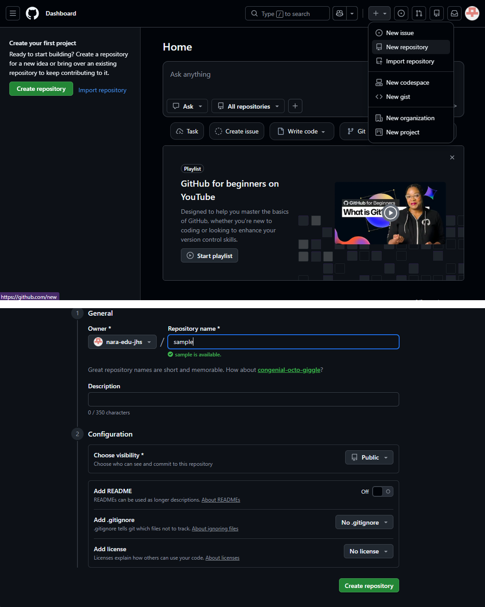
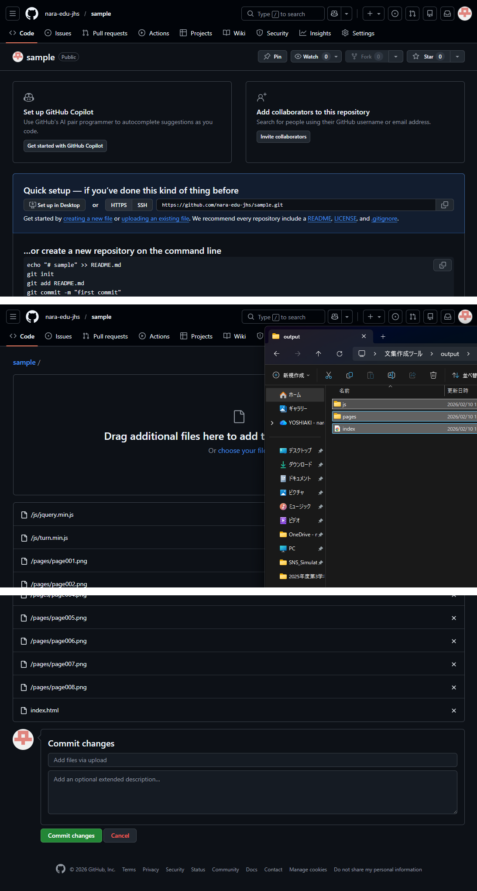
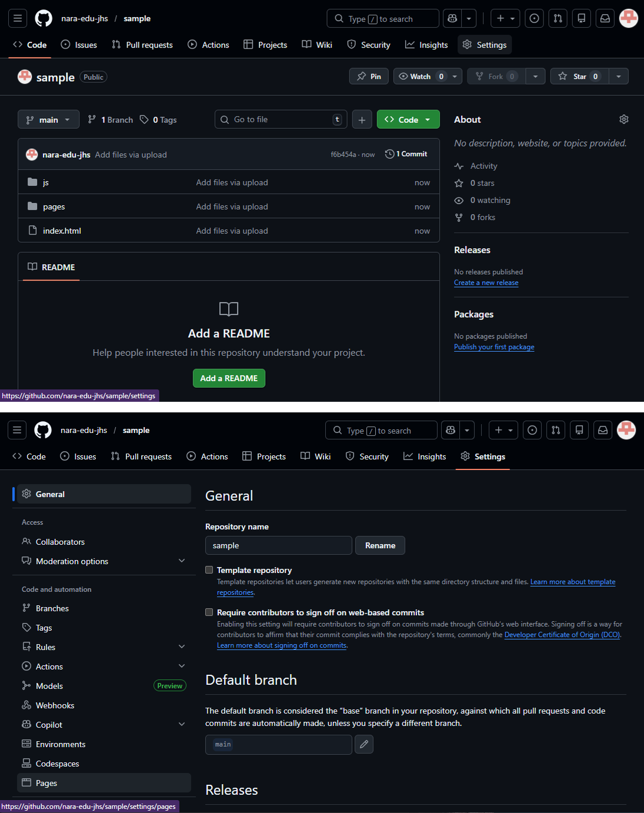
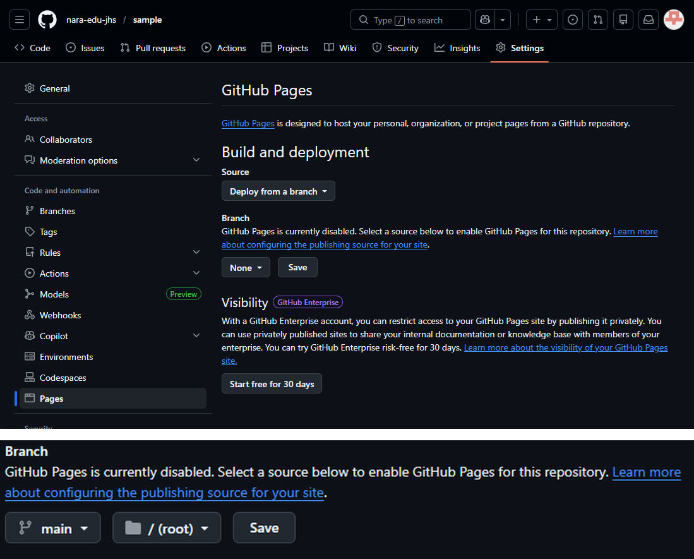
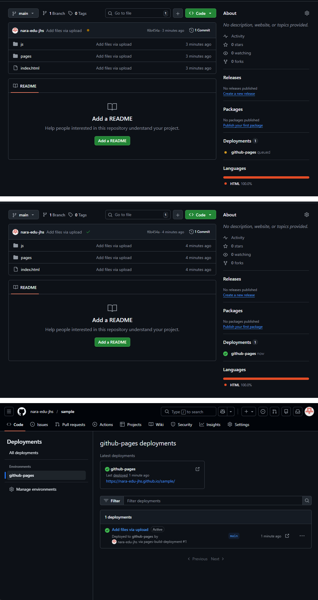
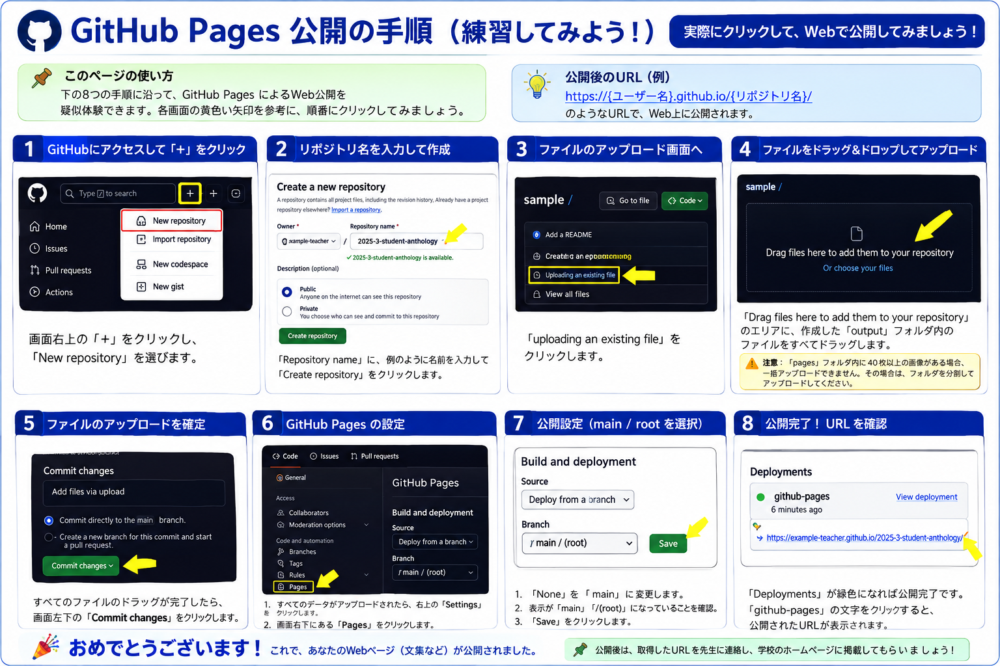

でも、ちょうどいいものが見つからない。
既存サービスでは少しだけ使いにくい。
アイデアはある。でも作り方が分からない。
文字、ボタン、動き、表示方法……。
「プログラミングができない」が、教師のアイデアを止めていた。
必要なのは、最初からコードを書く力ではなく、
「何がほしいか」を言葉にする力。
「文字をもっと大きく」
「黒板に映して見やすく」
「終了したら画面全体で知らせて」
「タブレットでも押しやすく」
生成AIは、教材を一緒に試作する相手になる。
特別なアプリを入れなくても、まず試せる。
「こういうのがほしい」を自然な言葉で入力する。
生成されたHTMLを保存して、ブラウザで開く。
「文字を大きく」「色を変えて」など、対話で修正する。
必要ならGitHub Pagesで公開する。
公開研究会では、この専用GPTを使って「こういうのがほしい」→HTML作成→修正までをその場で体験します。
QRコードまたはボタンから「公開研究会用HTML作成支援GPT」を開いてください。
※このプレビューは発表用HTMLの中だけで動く練習環境です。貼り付けたコードは外部へ送信しません。
GPTsに「こういうのがほしい」
HTMLをブラウザで実行
生徒や先生がURLから使えるように
作ったHTMLを公開すれば、URLやQRコードで誰でもアクセスできる。

GitHubにログインしたら、右上の＋をクリック。
新しいWeb教材の置き場所を作ります。
例：my-science-tool
この名前がURLの一部になります。
※画像はWord資料に挿入されていた元のスクリーンショットを直接使用しています。ログイン情報は掲載していません。

既に作ったファイルをアップロードする画面へ。
index.html と、必要な画像・フォルダなどを入れます。
アップロードした内容を確定します。

リポジトリ上部の「Settings」をクリック。
左側メニューから「Pages」を選びます。
コードを書く作業は、ここでは必要ありません。

公開するデータの場所を指定。
そのままルートフォルダを選択。
あとは公開処理が終わるのを待ちます。

公開処理が完了すると表示が緑色になります。
そのURLを生徒や同僚に共有できます。

画像をクリックすると拡大表示できます。
個々のツールは次のページから紹介します。まずは、活用の広がりを4つの領域で整理します。
概念理解や操作活動を支援するWeb教材
問いの設定、思考整理、要旨・論文作成を支援
学校全体で活用する仕組みづくりにも展開
対話シミュレーションによる思考・生徒理解の支援
生成AIを、教師の「こういうのがほしい」を実現するための道具として活用する。
生成AIは、教師のアイデアと実践をつなぐ「試作のパートナー」になり得る。
「こういうのがほしい」から始めてみる。